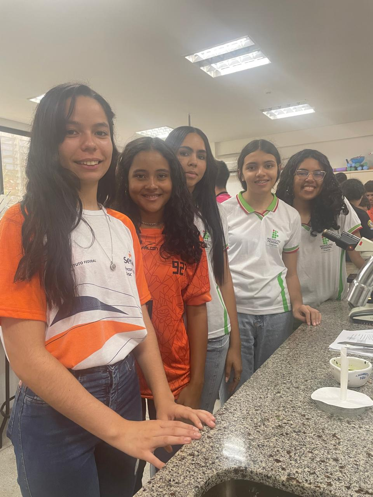

CITOLOGIA
A segunda aula do projeto IFBIO ocorreu no dia 08/11/2024, das 08:30 às 11:30, iniciando no laboratório. O tema abordado foi a célula, tratado de forma mais aprofundada, com apresentação conduzida pela colaboradora externa Denise Mota. Após a explanação, foi realizado um lanche coletivo, reunindo todos os participantes. Em seguida, ocorreram as práticas laboratoriais, que incluíram os seguintes experimentos: "Constatando a atividade das leveduras", "Ciclose nas células vegetais" e "Mucosa bucal". Essas atividades complementaram o aprendizado de forma prática e interativa.
